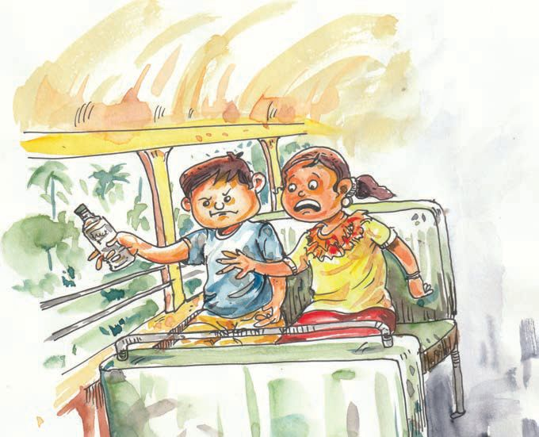
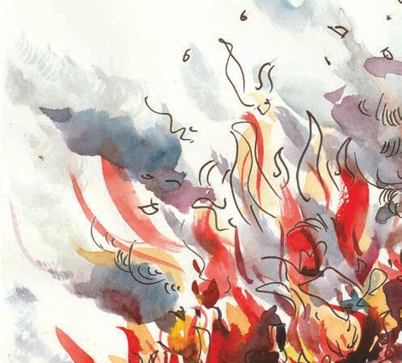
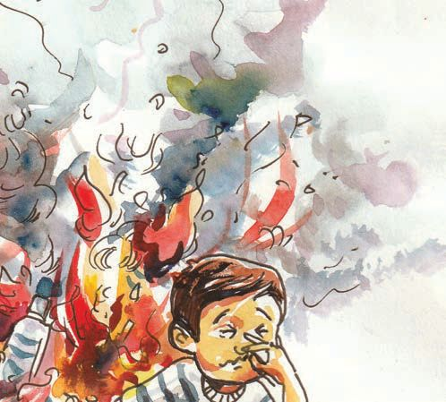
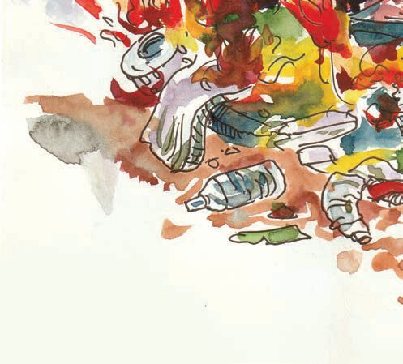
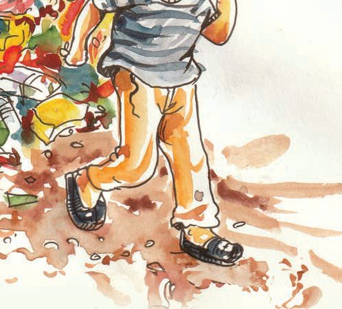

<!DOCTYPE html>
<html lang="ml">
<head>
  <meta charset="utf-8">
  <meta name="viewport" content="width=device-width, initial-scale=1.0">
  <title>Chapter 4 (Pages 67-72) - Class 3 Basic_science</title>
  <style>

:root {
  --bg-color: #fcfcfd;
  --card-bg: #ffffff;
  --text-color: #1e293b;
  --text-muted: #64748b;
  --primary-color: #0284c7;
  --primary-light: #e0f2fe;
  --border-color: #e2e8f0;
  --radius: 10px;
  --shadow: 0 4px 6px -1px rgb(0 0 0 / 0.05), 0 2px 4px -2px rgb(0 0 0 / 0.05);
}

body {
  font-family: -apple-system, BlinkMacSystemFont, "Segoe UI", Roboto, "Noto Sans Malayalam", "Manjari", "Gayathri", sans-serif;
  background-color: var(--bg-color);
  color: var(--text-color);
  line-height: 1.8;
  font-size: 1.1rem;
  margin: 0;
  padding: 0;
}

.container {
  max-width: 860px;
  margin: 0 auto;
  padding: 2.5rem 1.5rem 5rem 1.5rem;
}

header {
  margin-bottom: 2.5rem;
  padding-bottom: 1.5rem;
  border-bottom: 2px solid var(--border-color);
}

.badge-row {
  display: flex;
  gap: 0.5rem;
  margin-bottom: 0.75rem;
  flex-wrap: wrap;
}

.badge {
  display: inline-block;
  font-size: 0.75rem;
  font-weight: 700;
  text-transform: uppercase;
  letter-spacing: 0.05em;
  padding: 0.25rem 0.65rem;
  border-radius: 9999px;
  background: var(--primary-light);
  color: var(--primary-color);
}

.badge-medium {
  background: #fef3c7;
  color: #b45309;
}

.badge-class {
  background: #dcfce7;
  color: #15803d;
}

h1 {
  font-size: 2.1rem;
  font-weight: 800;
  margin: 0.5rem 0 1rem 0;
  line-height: 1.3;
  color: #0f172a;
}

.nav-bar {
  display: flex;
  justify-content: space-between;
  margin: 1.5rem 0;
  font-size: 0.95rem;
  flex-wrap: wrap;
  gap: 0.5rem;
}

.nav-bar a {
  color: var(--primary-color);
  text-decoration: none;
  font-weight: 600;
  padding: 0.5rem 1rem;
  border-radius: var(--radius);
  background: var(--card-bg);
  border: 1px solid var(--border-color);
  transition: all 0.2s ease;
}

.nav-bar a:hover {
  background: var(--primary-light);
  border-color: var(--primary-color);
}

.nav-bar .disabled {
  color: var(--text-muted);
  pointer-events: none;
  border-color: transparent;
  background: transparent;
}

.page-section {
  background: var(--card-bg);
  border: 1px solid var(--border-color);
  border-radius: var(--radius);
  box-shadow: var(--shadow);
  padding: 2rem;
  margin-bottom: 2.5rem;
}

.page-header {
  display: flex;
  align-items: center;
  justify-content: space-between;
  margin-bottom: 1.25rem;
  padding-bottom: 0.5rem;
  border-bottom: 1px dashed var(--border-color);
}

.page-number {
  font-size: 0.8rem;
  font-weight: 700;
  text-transform: uppercase;
  color: var(--text-muted);
  letter-spacing: 0.05em;
}

.page-content p {
  margin: 0 0 1.25rem 0;
  white-space: pre-wrap;
  word-break: break-word;
}

.page-content p:last-child {
  margin-bottom: 0;
}

.diagram-card {
  margin: 2rem 0;
  text-align: center;
  background: #f8fafc;
  border: 1px solid var(--border-color);
  border-radius: var(--radius);
  padding: 1rem;
  overflow: hidden;
}

.diagram-card img {
  max-width: 100%;
  height: auto;
  border-radius: calc(var(--radius) - 4px);
  display: inline-block;
  box-shadow: 0 2px 4px rgba(0,0,0,0.04);
}

.diagram-card figcaption {
  font-size: 0.85rem;
  color: var(--text-muted);
  margin-top: 0.75rem;
  font-weight: 500;
}

footer {
  margin-top: 3rem;
  padding-top: 2rem;
  border-top: 2px solid var(--border-color);
}

  </style>
</head>
<body>
  <div class="container">
    <header>
      <div class="badge-row">
        <span class="badge badge-class">Class 3</span>
        <span class="badge badge-medium">Malayalam Medium</span>
        <span class="badge">Basic science</span>
        <span class="badge">Part 1</span>
      </div>
      <h1>Chapter 4 (Pages 67-72)</h1>
      <div class="nav-bar"><a href="part_1_chapter_03.html">← Chapter 3 (Pages 47-66)</a><a href="index.html">☰ Index</a><span class="nav-bar disabled"></span></div>
    </header>
    <main>
      <section class="page-section" id="page-67">
  <div class="page-header"><span class="page-number">Page 67</span></div>
  <figure class="diagram-card" id="fig_ch04_p067_01"><figcaption>Figure fig_ch04_p067_01 (Page 67)</figcaption></figure>
  <figure class="diagram-card" id="fig_ch04_p067_02"><figcaption>Figure fig_ch04_p067_02 (Page 67)</figcaption></figure>
  <figure class="diagram-card" id="fig_ch04_p067_03"><figcaption>Figure fig_ch04_p067_03 (Page 67)</figcaption></figure>
  <div class="page-content">
    <p>‹äš“”›ǐā¡‘“‘ŒšÚDZ
“œĞ›c Ǘž‘›c iĬšsų ‹äš“”›ǏāÇ †ŒÚ§ mŦ
¡xƭšÄs’›c?</p>
    <p>s¢ƠšǢ§s’›
ˆ’c ˆăڏ› Ň
ŒŇDZc
‹äš“”›ǏāÇ‚}ā›
£z“ˆš’§
’“ǘÚÇs’››Ƴ
†›¢äˆ›Úsc Ĵ
ŒĴ›}sc
¡xƭs Œžų†šŒš–c ¡sšĬ§
ˆžÅŒšc “‘Œš›Œš››Ğ
Ĭšsc
†›ā‘¡} “œĞ›c “›„DZšĹ›c
e}Ú‘Œš›†DZāÇ –cǗŽ›Ú
ų‚›†§iˆ¢šu›Úų ŒšÅuāÇ
m¡ŦƼǰ?m’‚›¢†šÚž</p>
    <p>ƃšǢ›s§“›¡ă›Ž¢‚sśڎ¢‚
ƃšǡ›s§“ǘÚÇ
“›¡ă›Ž¡‚ų§
ˆ~›ă‚§Œ¢ųš?</p>
    <p>67</p>
  </div>
</section><section class="page-section" id="page-68">
  <div class="page-header"><span class="page-number">Page 68</span></div>
  <figure class="diagram-card" id="fig_ch04_p068_01"><figcaption>Figure fig_ch04_p068_01 (Page 68)</figcaption></figure>
  <figure class="diagram-card" id="fig_ch04_p068_02"><figcaption>Figure fig_ch04_p068_02 (Page 68)</figcaption></figure>
  <figure class="diagram-card" id="fig_ch04_p068_03"><figcaption>Figure fig_ch04_p068_03 (Page 68)</figcaption></figure>
  <figure class="diagram-card" id="fig_ch04_p068_04"><figcaption>Figure fig_ch04_p068_04 (Page 68)</figcaption></figure>
  <figure class="diagram-card" id="fig_ch04_p068_05"><figcaption>Figure fig_ch04_p068_05 (Page 68)</figcaption></figure>
  <figure class="diagram-card" id="fig_ch04_p068_06"><figcaption>Figure fig_ch04_p068_06 (Page 68)</figcaption></figure>
  <figure class="diagram-card" id="fig_ch04_p068_07"><figcaption>Figure fig_ch04_p068_07 (Page 68)</figcaption></figure>
  <figure class="diagram-card" id="fig_ch04_p068_08"><figcaption>Figure fig_ch04_p068_08 (Page 68)</figcaption></figure>
  <div class="page-content">
    <p>ƃšǡ›s§“ǘÚÇ“›¡ă›Ž¡‚ų§ˆų¡‚Ŧ¡sšĬ§ ?
z
z
z</p>
    <p>x›ŅśÆmŦš§sšų‚§?
ƃšǡ›s§sśڝų‚ŒžŒĬšsųƂLjāÇm¡ŦƼǰ?
㚖›ÆxÅă ¡xƭž
–
68</p>
  </div>
</section><section class="page-section" id="page-69">
  <div class="page-header"><span class="page-number">Page 69</span></div>
  <figure class="diagram-card" id="fig_ch04_p069_01"><figcaption>Figure fig_ch04_p069_01 (Page 69)</figcaption></figure>
  <figure class="diagram-card" id="fig_ch04_p069_02"><figcaption>Figure fig_ch04_p069_02 (Page 69)</figcaption></figure>
  <div class="page-content">
    <p>ƃšǡ›s§ †ƣ¡} zœ“›‚Ĺ›¡ p’›“šÚš†š“šĹ pŽ
“ǘ“š› 
Œš››Ž›Úų mųšÆ e“ xǮˆš}›¢Ú§
“›¡ă›s¢š sśƩs¢š ¡xƪšÆ ˆ f¢ŽšuDZ
ƂLjā‘ciĬšscpǮœiˆ¢šu›ă§“›¡ă›ų
ƃšǡ›s§ sDZšŽ›ŠšusÇ ƃšǡ›s§ sƀ›sÇ mų›“¡}
iˆ¢šucˆŽŒš“ ›sƩc ƃšǡ›s§Œš›†DZāLjŽ›–Ž
¢ĹƩ§“›¡ă›š¡‚ ‚Žc‚›Ž›ă§g“ –cǗŽ›Úų‚›†š›
¢”tŽ›Úų“ÅÚ§£sŒšc</p>
    <p>“››ŽĹDZ
1. ‚š¡’ƀų “ǘÚÇ‚Žc‚›Ž›ă§¢šz›ă Œš›†DZڞ}s‘›Æ</p>
    <p>m’‚›¢ăÅڞ
</p>
    <p>ˆ›“›–› £ˆƀ§ ˆ’c sœ}†š”›†›Úƀ›sÇ ˆăڏ›
e“”›ǏāÇ ƃšǡ›s§¢ŠšĞ›sLj’s› ŠšǮ›iˆ¢šu
”
”ž†DZ 
ŒšŠÇŠsNj䁚“”›ǏāÇ ƃšǡ›s§s“sÇ</p>
    <p>e£z“
Œš›†DzāÇ</p>
    <p>£z“
Œš›†DzāÇ</p>
    <p>eˆs}sŽŒš
Œš›†DzāÇ</p>
    <p>2. “œ}c ˆŽ›–Ž“c ƽśǫ‚š¢š mų›ų‚›†ǫ</p>
    <p>pŽ†›ŽœäƀĞ›s ‚ƭššÚs ˆĞ›s›¡ “›“Žā‘¡}
e}›Ǚš†Ĺ›Æ “œ}c ˆŽ›–Ž“c ƽśšÚų‚›†š›
m¡ŦƼǰ Ƃ“Åņā‘š§ †}ƀ›šÚ›‚§ ? ›¢ƀšÅЧ
‚ƭššÚs
69</p>
  </div>
</section><section class="page-section" id="page-70">
  <div class="page-header"><span class="page-number">Page 70</span></div>
  <figure class="diagram-card" id="fig_ch04_p070_01"><figcaption>Figure fig_ch04_p070_01 (Page 70)</figcaption></figure>
  <div class="page-content">
    <p>‚}ÅƂ“ÅņāÇ
1. s}š–§‚œ¡ƀĞ›Úž}§“‘¡ƀšĞ§sƀ›¡} e}ƀ§¢ˆ†ƃšǡ›s§</p>
    <p>sƀ› ‚›sÇ }›ų§ ‚}ā› †›ā‘¡} “œĞ›Ĭšsų
ˆš’§“ǘÚ‘ˆ¢šu›ă§ eÿšŽ “ǘÚÇ ¡x}›ăĞ›sÇ
‚}ā›iˆsšŽƂ„Œš “ǘÚdž›Åƣ›Ús
2. ‹äš“”›Ǐā‘š¢š
ƃšǡ›Ú§ “ǘÚ‘š¢š Ĵ
ǡ
ŒĴ›Æ</p>
    <p>e’s›¢ăŽų‚§mų›ų‚›†¢“Ĭ›pŽˆŽœäc¡xƪ§
s›ƀ§ ‚ƭššÚs</p>
    <p>70</p>
  </div>
</section><section class="page-section" id="page-71">
  <div class="page-header"><span class="page-number">Page 71</span></div>
  <div class="page-content">
    <p>‹šŽ‚Ĺ›¡ź‹Žv}†
‹šuc-:s</p>
    <p>Œ›s sÅœDzāÇ
sŒ›s sÅœDzāÇ ‚š¡’ƀų“ ‹šŽ‚Ĺ›¡q¢Žš ˆŽ¡źc
sÅœDzcf›Ž›Úų‚š§
s</p>
    <p>‹Žv}†¡ e†–Ž›Úsce‚›¡ź f„Å”ā¡‘c Ǚšˆ†ā
¡‘c ¢„”œˆ‚šs¡c ¢„”œuš†¡Ĺcf„Ž›Úsc ¡xƭs</p>
    <p>t  –Ǵš‚ũDZś†¢“Ĭ›ǫ†ƣ¡} ¢„”œ–ŒŽĹ›†§Ƃ¢xš„†c †Æs›
Œ—†œš„Å”ā¡‘ ˆŽ›¢ˆš•›ƀ›Úsc ˆ›Ä‚}Žsc ¡xƭs
u  ‹šŽ‚Ĺ›¡ź ˆŽŒš ›sšŽ“cosDZ“cetį‚c †›†›Åŝsc
–cŽä›Úsc ¡xƭs
v ŽšzDZ¡Ĺ sšĹ–žä›Úsc ¢„”œ¢–“†ce†ǐ›Ú“šÄf“”DZ
¡ƀ}¢ƠšÇe†ǐ›Úsc ¡xƭs
w  Œ‚ˆŽ“c ‹š•šˆŽ“c Ƃš¢„”›s“c“›‹šuœ“Œš £““› DZāÇڂœ
‚Œš›‹šŽ‚Ĺ›¡mƼš z†āÇڝŒ›}›Æ –—šÅ„“c ¡ˆš‚“š
–š¢—š„ŽDZŒ¢†š‹š““c ˆÅŝs Ȼœs‘¡} eŦǠ›†§ s“ “ŽĹų
fxšŽāLjŽ›‚DZz›Ús
x  †ƣ¡} –ƣ›NJ–cǗšŽĹ›¡ź –ƠųŒš ˆšŽƠŽDZ¡Ĺ “›Œ‚›Úsc
†›†›Ĺsc ¡xƭs
y  “†ā‘c ‚}šsā‘c†„›s‘c †
“†DZzœ“›s‘ciÇ¡ƀ}ųƂՂDZšiǫ
ˆŽ›Ǚ›‚› –cŽä›Úsc
e‹›ƽŗ›¡ƀ}Ĺsc zœ“›s¢‘š}§
‹
sšŽDZc sš›Úsc ¡xƭs
z  ”šȻœŒš sš’§xƀš}c Œš†“›s‚c
e¢†Ǵ•Ĺ›†c ˆŽ›•§sŽ
†
ś†ciǫŒ¢†š‹š““c “›s–›ƀ›Ús
{  ¡ˆš‚–Ǵŧ ˆŽ›Žä›Úsc ”ˆƒc ¡xƪ§ eâŒc i¢ˆä›Úsc
¡xƭs
|  Žšȸc ŀś¡źcäDZƂšž›¡}cių‚‚ā‘›¢Ú§ †›ŽŦŽc
iŽĹړĴc “DZޛˆŽ“c sžĞš‚Œš Ƃ“Åņś¡ź mƼš
Œįā‘›c iÆÛǏ‚Ʃ¢“Ĭ›e Ǵš†›Ús
}</p>
    <p>f›†c ˆ‚›†š›†cg}Ʃ§ ƂšŒǫ‚¡ź sĞ›¢Úš ‚¡ź –cŽä
›ǫsĞ›sǢښe‚‚–cu‚›¢ˆš¡Œš‚šˆ›‚šÚ¢‘šŽäšsÅ
Ś¢“š “›„DZš‹DZš–Ĺ›†ǫe“–ŽāÇnÅ¡ƀ}Ĺs</p>
  </div>
</section><section class="page-section" id="page-72">
  <div class="page-header"><span class="page-number">Page 72</span></div>
  <figure class="diagram-card" id="fig_ch04_p072_01"><figcaption>Figure fig_ch04_p072_01 (Page 72)</figcaption></figure>
  <div class="page-content">
    <p>sĞ›s‘¡}e“sš”āÇ
Ƃ›ŒǫsĞ›s¢‘
†›āÇڝǫ e“sš”ā¡‘¡ŦƼš¡Œų§ e›¢Ĭ‚›¢Ƽ# e“sš”ā¡‘ڝ
›ăǫ e›“§ †›ā‘¡} ˆÿš‘›Ĺc –cŽäc –šŒž—›s†œ‚› mų›“
iƀšÚšÄ ¢ƂŽc Ƃ¢xš„†“c †Æsc †›ā‘¡} e“sš”āÇ
–cŽä›ÚšÄ g¢ƀšÇ pŽ sƣœ•Ä Ƃ“ÅśڝųĬ§ ¢sŽ‘ –cǙš†
Ššš“sš”–cŽä sƣœ•Ä mųš§ e‚›¡ź ¢ˆŽ§ m¡ŦƼšŒš§
†›āÇڝǫe“sš”āÇmų¢†šÚǰ
y</p>
    <p>–c–šŽĹ›†c f”Ƃs}†Ĺ›†
Œǫ–Ǵš‚ũDZc</p>
    <p>y</p>
    <p>zœ“¡źc
“DZޛ–Ǵš‚ũDZś
¡źc –cŽäc</p>
    <p>y</p>
    <p>e‚›zœ“†Ĺ›†c ˆžÅĴ“›sš–Ĺ›
‚
†Œǫe“sš”c</p>
    <p>y</p>
    <p>y –z†DZ“c †›ÅŠŰ›‚“Œš “›„DZš</p>
    <p>‹DZš– e“sš”c
y s‘›Úš†c ˆ~›Úš†Œǫe“sš”c
y ¢Ǜ—“c</p>
    <p>–Žäc
†Æsų
s}cŠ“c –Œž—“c ‹DZŒšsš†ǫ
e“sš”c</p>
    <p>y zš‚›Œ‚“Åu“ÅĴ x›ŦsÇڂœ‚</p>
    <p>Œš›Š—Œš†›Ú¡ƀ}š†c ecuœsŽ›
Ú¡ƀ}š†Œǫe“sš”c
”šŽœŽ›s“c £cu›
s“Œš ˆœ†ā‘›Æ†›ųǫ–cŽ
äĹ›†c ˆŽ›xŽĹ›†Œǫ
e“sš”c</p>
    <p>†›ā‘¡}x›iŎ“š„›‚ǵāÇ</p>
    <p>y Œš†–›s“c</p>
    <p>y ˆÿš‘›Ĺś†ǫe“sš”c
y</p>
    <p>Šš¢“›Æ†›ųc fˆÆڎ
Œš ¢zš›s‘›Æ†›ųŒǫ¢Œšx†c</p>
    <p>y £””““›“š—Ĺ›Æ†›ųǫ</p>
    <p>–cŽ</p>
    <p>äc
y –ǴŦc</p>
    <p>–cǗšŽc e›ų‚›†c
e‚†–Ž›ă§ zœ“›Úų‚›†Œǫ
–Ǵš‚ũDZc</p>
    <p>e“u†s‘›Æ†›ųǫ–cŽäc</p>
    <p>ǗžÇ ¡ˆš‚–c“› š†āÇ mų›“
†”›ƀ›Úš¡‚ –cŽä›Ús
y Ǘž‘›c ˆ~†Ƃ“Åņā‘›c ՂDZ
†›ǐˆš›Ús
y ǗžÇ
e ›sšŽ›s¡‘c e DZšˆ
s¡Žc Œš‚šˆ›‚šÚ¡‘c –—ˆš~›
s¡‘c Š—Œš†›Úsc ecuœsŽ›
ڝsc ¡xƭs
y zš‚›Œ‚“Åu“ÅĴ
x›ŦsÇڂœ
‚Œš› ŒǮǫ“¡Ž Š—Œš†›Úš†c
ecuœsŽ›Úš†c –ųŗŽš“s
y</p>
    <p>ŠŰ¡ƀ¢}Ĭ“›š–c</p>
    <p>¢sŽ‘ –cǚš†Ššš“sš”–cŽä sƣœ•Ä
NJœu¢•§ Ǯ›–›“šÄ¢š–§zcw§•Ä
¢sŽ‘ ž›¢“’§–›Ǯ›ˆ›p ‚›Ž“†ŦˆŽcË
¢‰šÃË
g¡Œ›ÆGLMPHVMKLXWGTGV$OIVEPEKSZMRVXIGTGV$OIVEPEKSZMR
¡“Š§£–Ǯ§ [[[OIWGTGVOIVEPEKSZMR
£xƧ¡—Æƀ§£Ä £âc ¢ǡšƀÅ †›Å‹Ë
¢sŽ‘ ¡ˆšœ–§¡—Æƀ§£ÄË
online R.T.E Monitoring : www.nireekshana.org.in</p>
  </div>
</section>
    </main>
    <footer>
      <div class="nav-bar"><a href="part_1_chapter_03.html">← Chapter 3 (Pages 47-66)</a><a href="index.html">☰ Index</a><span class="nav-bar disabled"></span></div>
      <p style="text-align: center; font-size: 0.85rem; color: var(--text-muted); margin-top: 2rem;">
        Kerala SCERT Class 3 Basic_science (Malayalam Medium) - Extracted Study Text
      </p>
    </footer>
  </div>
</body>
</html>
